using renv to lock packages
2026-04-03
But then!
Updates were made to the dplyr package:
Warning message:
`add_rownames()` was deprecated in dplyr 1.0.0.
Please use `tibble::rownames_to_column()` instead.renv is designed to improve project-level reproducibilityrenv.lock (portable)renv.lock can be restored with renv::restore() (reproducible)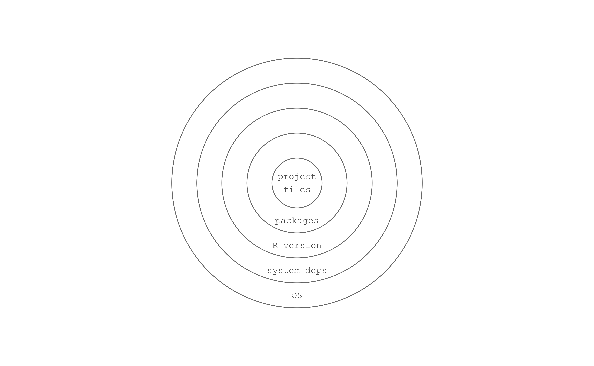
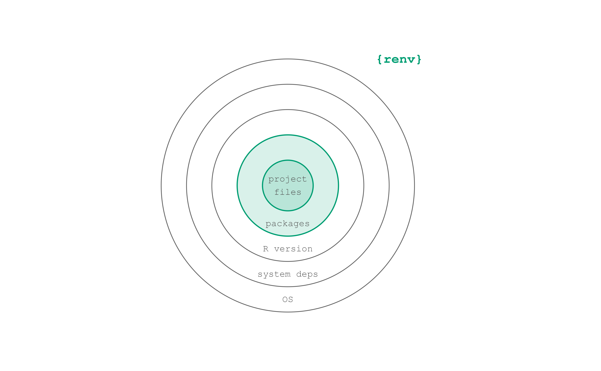
renv::init()renv.lockrenv::init()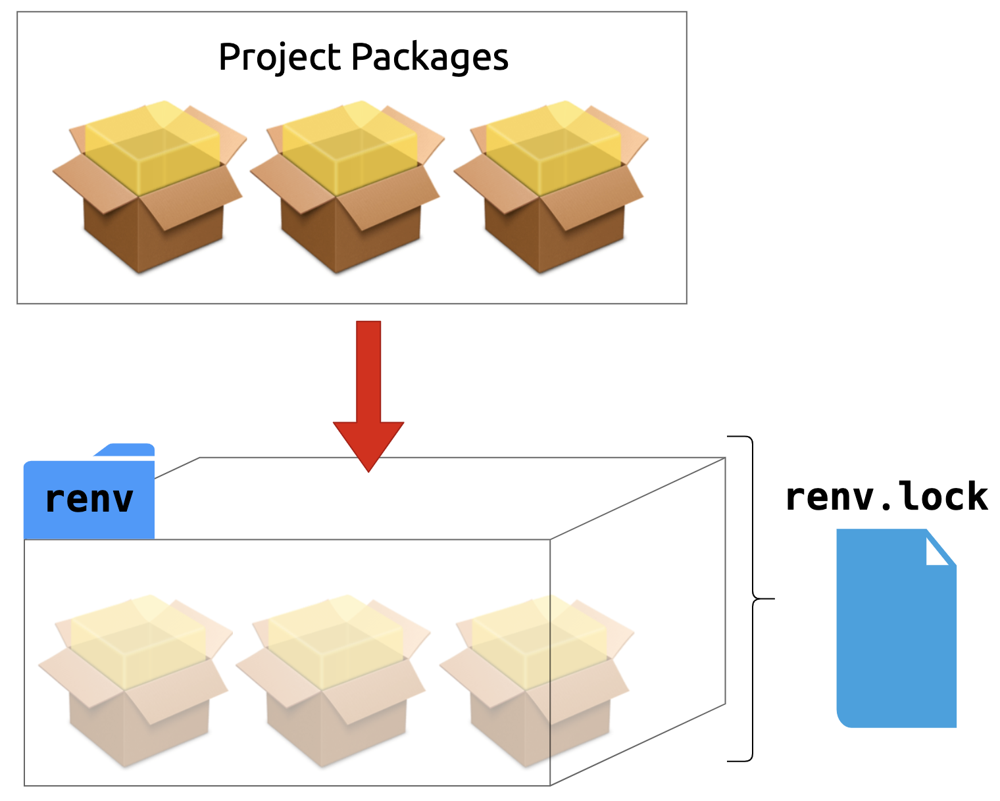
renv.lock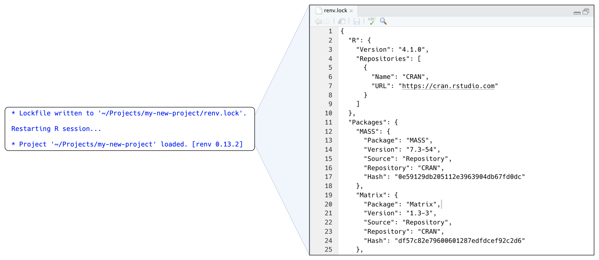
renv.lock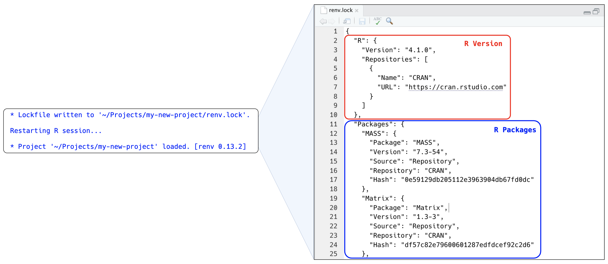
renv::dependencies()library(ggplot2)targets::tar_target()require(dplyr)requireNamespace("devtools")renv::dependencies()library(ggplot2)targets::tar_target()require(dplyr)requireNamespace(“devtools“)renv stores packages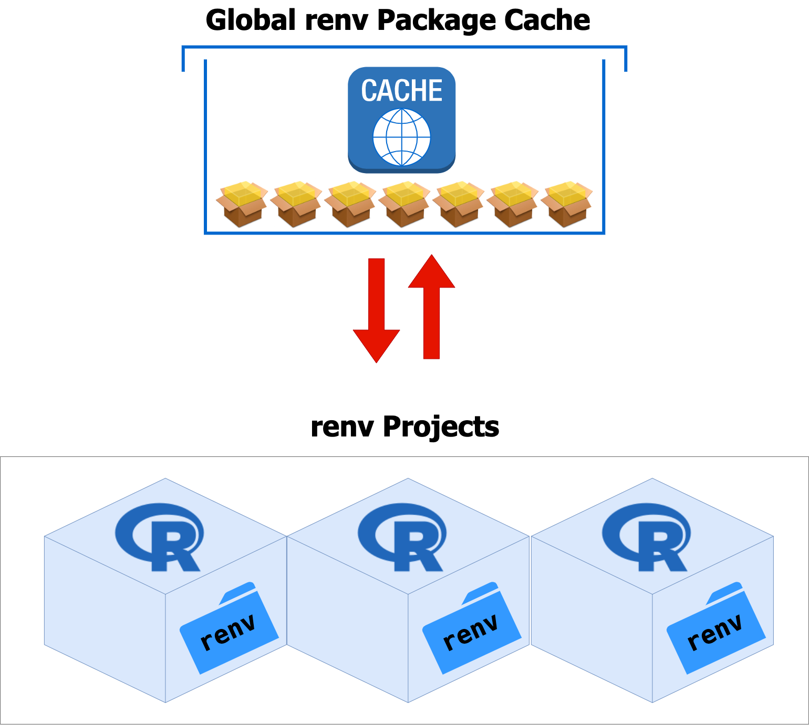
Work through Your Turn 1 in exercises.qmd
renv::status()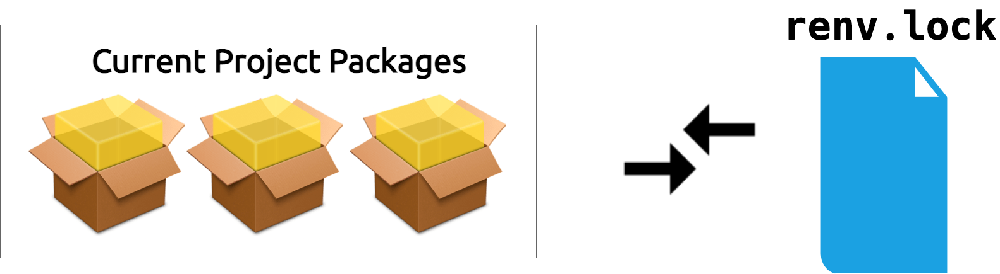
renv.lock and the current project’s packagesrenv::snapshot()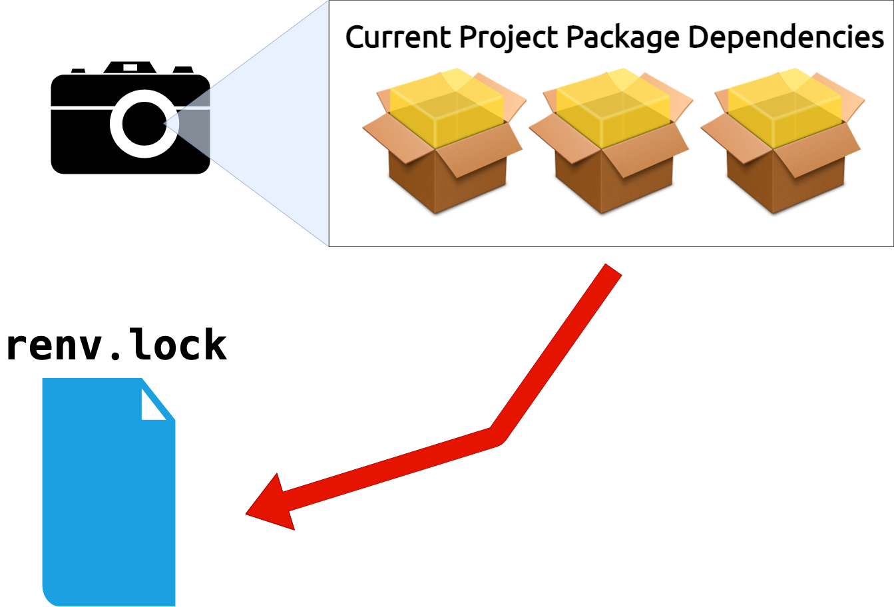
Work through Your Turn 2 in exercises.qmd
renv::init()renv::snapshot()renv::restore()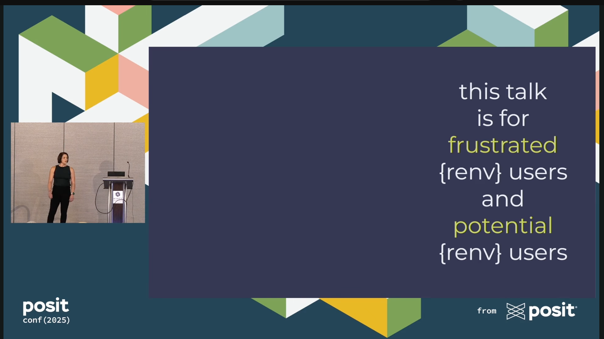
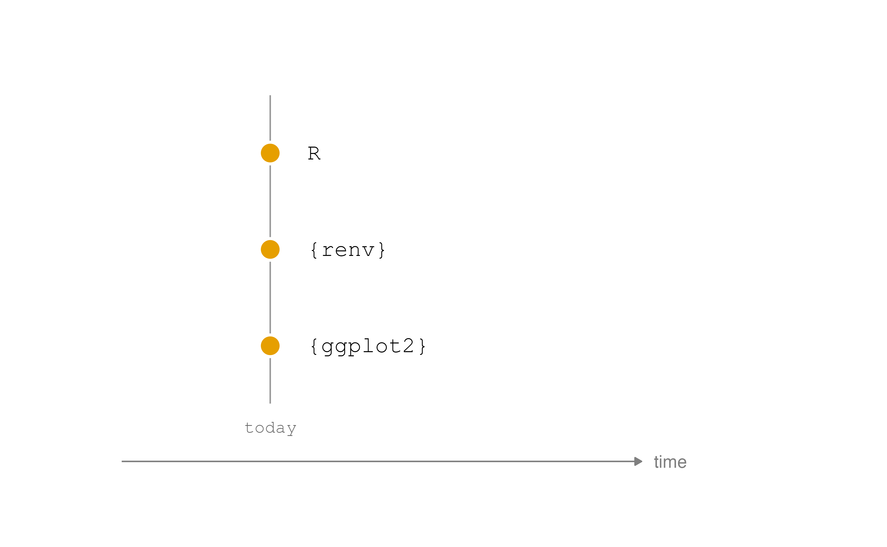
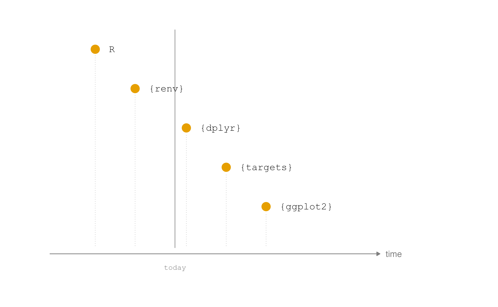
install.packages() and friends.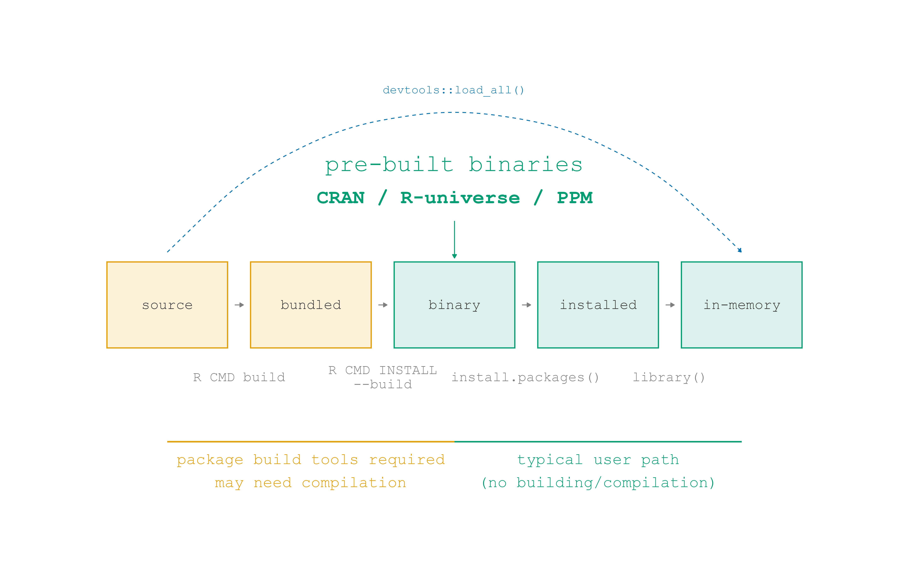
rig add <version>, e.g. rig add 4.1.0 rig add releaserig default <version>, rig rstudio <version>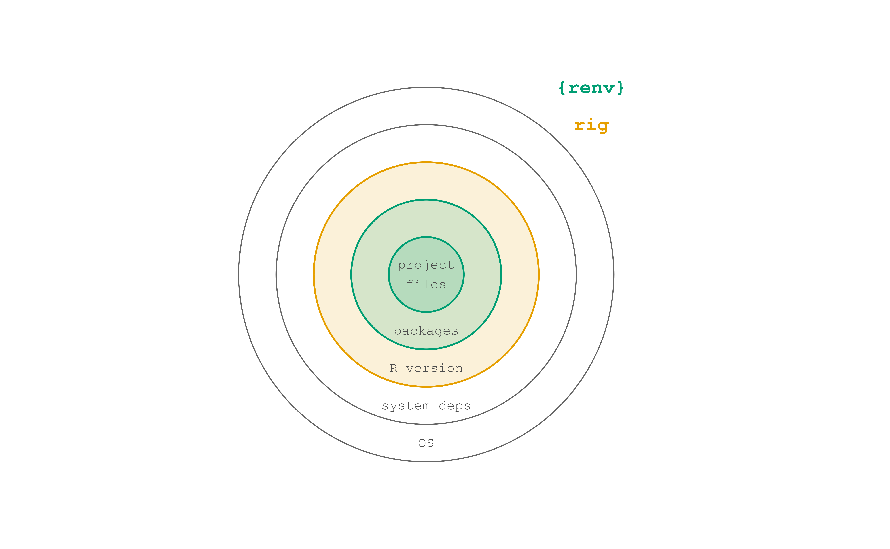
CRAN
"https://cran.rstudio.com/"
attr(,"IDE")
[1] TRUErenv::checkout(repo = ...)renv::checkout()renv::checkout(date = "yyyy-mm-dd")renv::checkout() also has a fast way to checkout from Posit Package Manager’s daily CRAN snapshotsrversions::r_versions() to figure out which R version was the release version on a given date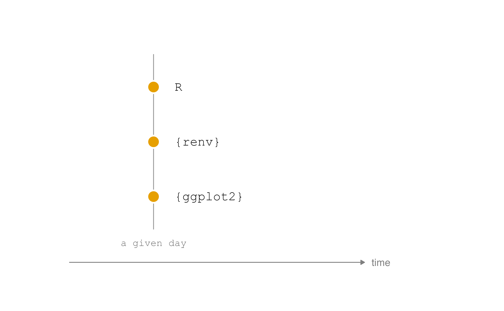
rig add release + rig default releasecheckout(date = "...", action = c("snapshot", "restore")) a recent date (after the most recent release)Work through Your Turn 3 in exercises.qmd
READMEREADMEs are plain text files, often README.md (markdown), that describe the projectREADMEs may be useful for subdirectories, too.READMEsusethis::use_readme_md() or usethis::use_readme_rmd()Work through Your Turn 4 in exercises.qmd
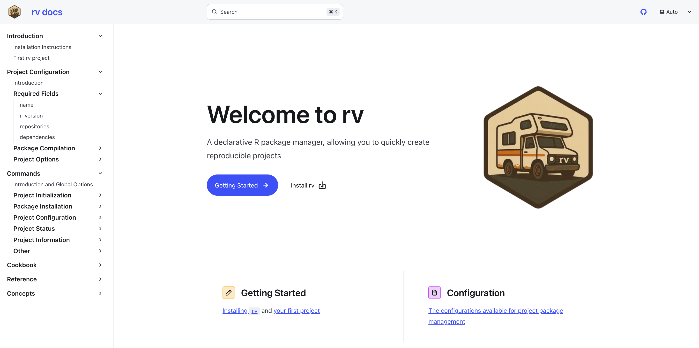
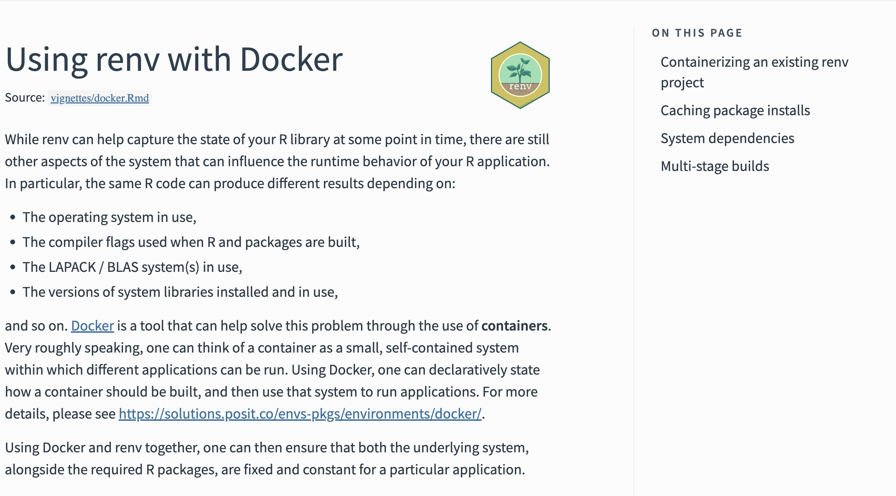
tar_option_set(packages = "...")tar_option_set() is efficient but works differently than other ways of loading packagestar_option_set()library(ggplot2)targets::tar_target()require(dplyr)requireNamespace(“devtools“)tar_renv()Work through Bonus Your Turn: targets and renv in exercises.qmd